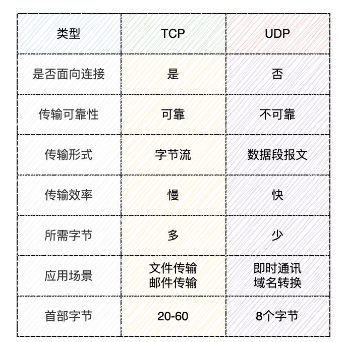

🏗️ 网络编程基础
📌 IP地址
在互联网中，一个 IP 地址用于唯一标识一个网络设备。一台联入互联网的计算机肯定有一个 IP 地址，但也可能有多个 IP 地址。
IP 地址又分为公网 IP 地址和内网 IP 地址。公网 IP 地址可以直接被访问，内网 IP 地址只能在内网访问。
假设一台计算机只有一个网卡，并且接入了网络，那么，它有一个本机地址127.0.0.1，还有一个 IP 地址，例如101.202.99.12，可以通过这个 IP 地址接入网络。
假设路由器或者交换机有两个网卡，它有两个 IP 地址，分别接入不同的网络，让网络之间连接起来。
如果两台计算机位于同一个网络，那么他们之间可以直接通信，因为他们的 IP 地址前段（网络号）是相同的。
网络号是 IP 地址与子网掩码过滤后得到的。（子网掩码转换成二进制和IP地址转换成二进制后按位进行与操作）
|
|
如果两台计算机计算出的网络号相同，说明两台计算机在同一个网络，可以直接通信。
如果两台计算机计算出的网络号不同，那么两台计算机不在同一个网络，不能直接通信，它们之间必须通过路由器或者交换机这样的网络设备（网关）间接通信。
网卡的关键配置
- IP 地址，例如：
10.0.2.15 - 子网掩码，例如：
255.255.255.0 - 网关的 IP 地址，例如：
10.0.2.2
📌 域名
直接记忆 IP 地址非常困难，所以通常使用域名访问某个特定的服务。
域名解析服务器 DNS 负责把域名翻译成对应的 IP，客户端再根据 IP 地址访问服务器。
📌 端口号
用于标识计算机上的具体应用程序或进程。端口号与 IP 地址结合，共同用于标识一个主机上的具体服务或应用。
📌 协议
网络通信的规则

🌐 网络套接字Socket
Socket（套接字）：网络通信的基本单位，通过 IP 地址和端口号标识。
套接字（Socket）是一个抽象层，应用程序可以通过它发送或接收数据；就像操作文件那样可以打开、读写和关闭。套接字允许应用程序将 I/O 应用于网络中，并与其他应用程序进行通信。网络套接字是 IP 地址与端口的组合。
📦 InetAddressIP地址类
InetAddress 是 Java 中用于表示一个 IP 地址的类，它提供了多种方法用于获取和处理与主机名或 IP 地址相关的信息。InetAddress 类位于 java.net 包中，常用于网络编程中。
🔨 常用方法
public static InetAddress getByName(String host) throws UnknownHostException：该方法通过主机名或 IP 地址字符串返回一个InetAddress对象public static InetAddress getByAddress(String host, byte[] addr) throws UnknownHostException：通过给定的 IP 地址（字节数组）和主机名，返回一个InetAddress对象。public static InetAddress getLocalHost() throws UnknownHostException：该方法返回当前计算机的InetAddress对象。public String getHostName()：获取与InetAddress对象相关联的主机名。public String getHostAddress()：获取与InetAddress对象相关联的 IP 地址（以字符串形式返回）
📚 UDP协议传输
UDP 协议通过 DatagramSocket 和 DatagramPacket 类来实现。
📌 服务端
- 创建一个
DatagramSocket来监听端口。 - 等待并创建
DatagramPacket用于接收客户端发送的数据包。 - 处理数据并可能向客户端发送响应。
|
|
📌 客户端
- 创建一个
DatagramSocket用于发送数据。 - 创建一个
DatagramPacket，通过该包发送数据到服务器。 - 等待接收服务器的响应。
|
|
💎 核心类
🌐 DatagramSocket网络套接字
DatagramSocket 提供了发送和接收数据包的功能。
构造方法
public DatagramSocket() throws SocketExceptionpublic DatagramSocket(int port) throws SocketExceptionpublic DatagramSocket(int port, InetAddress bindAddress) throws SocketException
收发数据
public void send(DatagramPacket packet) throws IOException：发送一个数据包到目标地址。public void receive(DatagramPacket packet) throws IOException：接收来自远程主机的数据包
设置超时
public void setSoTimeout(int timeout) throws SocketException：设置超时时间，如果在指定的时间内没有数据到达，则会抛出SocketTimeoutException。
关闭套接字
public void close()：关闭套接字
📊 DatagramPacket数据包类
DatagramPacket 类提供了封装数据包的功能，常用于 UDP 协议的通信中。它可以用于存储接收到的数据或准备发送的数据。
构造方法
public DatagramPacket(byte[] buf, int length)buf：用于存储数据的字节数组。length：数据包的有效数据长度（在字节数组中的有效数据部分）。
public DatagramPacket(byte[] buf, int length, InetAddress address, int port)buf：用于存储数据的字节数组。length：数据包的有效数据长度。address：目标主机的 IP 地址。port：目标主机的端口号。
获取数据
public byte[] getData()：返回DatagramPacket中存储的数据字节数组。public int getLength()：返回DatagramPacket中有效数据的长度（字节数）。public InetAddress getAddress()：返回DatagramPacket中目标主机的 IP 地址。public int getPort()：返回DatagramPacket中目标主机的端口号。
设置属性
public void setData(byte[] buf)public void setLength(int length)public void setAddress(InetAddress address)public void setPort(int port)
📚 TCP协议传输
📌 服务端
- 创建一个
ServerSocket来监听端口。 - 调用
ServerSocket的accept()返回一个Socket对象监听客户端的套接字请求 - 获取连接通道的输入流读取来自客户端的数据
- 释放资源
|
|
📌 客户端
- 创建客户端的
Socket对象- 创建
Socket对象时同时连接服务端 - 若服务端不可访问会发生阻塞直到抛出异常
- 创建
- 获取连接通道的输出流，写入数据
- 释放资源
|
|
💎 核心类
💡 ServerSocket服务端套接字
ServerSocket 类是 Java 中用于实现 TCP 服务器端的类。它主要用于监听客户端的连接请求并接受连接。
构造方法
public ServerSocket(int port) throws IOExceptionpublic ServerSocket(int port, int backlog) throws IOExceptionpublic ServerSocket(int port, int backlog, InetAddress bindAddr) throws IOException
接受连接
public Socket accept() throws IOException：接受客户端的连接请求。- 此方法会阻塞，直到有客户端发起连接请求。
- 返回一个已连接的
Socket实例，客户端可以通过该Socket与服务器通信。
状态检测
public boolean isBound()：检查ServerSocket是否已经绑定到一个本地地址和端口。public boolean isClosed()：检查ServerSocket是否已关闭
💡 Socket客户端套接字
Socket 类是 Java 中用于实现 TCP 客户端通信的类，它提供了与服务器建立连接、发送和接收数据的功能。
构造方法
public Socket(String host, int port) throws UnknownHostException, IOException：创建一个指定主机和端口的Socket，并与目标主机建立连接。host：目标主机的 IP 地址或域名。port：目标主机的端口号。
public Socket(InetAddress address, int port) throws IOException：创建一个指定 IP 地址和端口号的Socket，并与目标主机建立连接address：目标主机的 IP 地址（InetAddress类型）。port：目标主机的端口号。
获取IO流
public InputStream getInputStream() throws IOException：返回与此Socket关联的输入流，客户端可以通过该流接收从服务器发送的数据public OutputStream getOutputStream() throws IOException：返回与此Socket关联的输出流，客户端可以通过该流向服务器发送数据。
设置超时时间
public void setSoTimeout(int timeout) throws SocketException：设置读取数据的超时时间。如果在指定的时间内没有数据可读取，则会抛出SocketTimeoutException。